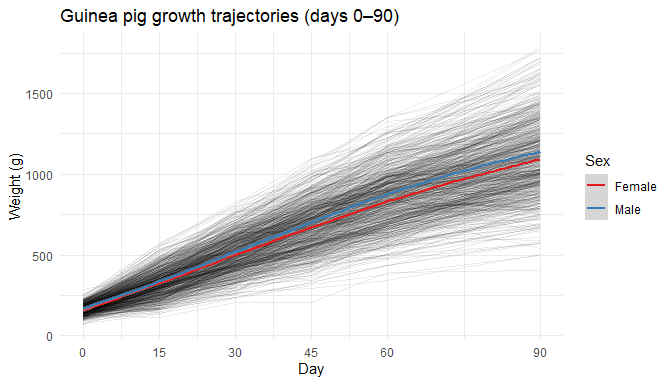
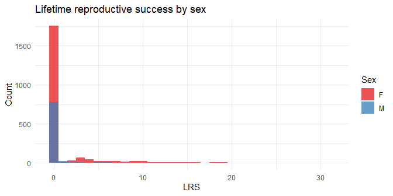

pedigreedata is an umbrella data package that provides curated pedigree and phenotype datasets for use in quantitative genetics and behavior genetics research. Each dataset has been validated for pedigree integrity and is ready for use with packages such as BGmisc and ggpedigree.
Datasets
| Dataset | Description | Individuals | Source |
|---|---|---|---|
guinea_pigs |
Four-generation controlled breeding study of Cavia porcellus with repeated body weight measurements (days 0–90) | 10892 | Figshare |
red_squirrels |
35+ years of pedigree and fitness data for wild North American red squirrels (Tamiasciurus hudsonicus) from the Kluane Red Squirrel Project | 7799 | Dryad |
war_of_the_roses |
Pedigree of key figures in the 15th-century English Wars of the Roses, rooted at Edward III | 95 | Public genealogical records |
Installation
You can install the development version of pedigreedata from GitHub with:
# install.packages("pak")
pak::pak("R-Computing-Lab/pedigreedata")Quick start
library(pedigreedata)
# Guinea pig growth data
head(guinea_pigs[, c("ID", "dadID", "momID", "sexo", "famID", "p0", "p90")])
#> ID dadID momID sexo famID p0 p90
#> 1 001-1 M002 1 M NA 130 1086
#> 2 001-2 M002 1 M NA 142 1118
#> 3 001-21 M002 1 H NA 156 824
#> 4 001-22 M002 1 M NA 142 926
#> 5 001-31 M002 1 H NA 114 950
#> 6 001-33 M002 1 M NA 94 NA
# Red squirrel fitness data
head(red_squirrels[, c("personID", "momID", "dadID", "sex", "byear", "lrs")])
#> personID momID dadID sex byear lrs
#> 1 1 NA NA F NA NA
#> 2 2 NA NA F NA NA
#> 3 3 NA NA F NA NA
#> 4 4 NA NA F NA NA
#> 5 5 NA NA F NA NA
#> 6 6 NA NA F NA NA
# Wars of the Roses pedigree
head(war_of_the_roses[, c("id", "name", "sex", "momID", "dadID", "famID")])
#> id name sex momID dadID famID
#> 1 1 Edward III M NA NA 1
#> 2 2 Phillipa of Hainault F NA NA 1
#> 3 3 Edward The Black Prince M 2 1 1
#> 4 4 Joan of Kent F 95 94 1
#> 5 5 Isabella of England Countess of Bedford F 2 1 1
#> 6 6 Enguerrand VII Lord of Coucy M NA NA 2Guinea pigs
guinea_pigs combines a four-generation pedigree with body weights measured at six ages (days 0, 15, 30, 45, 60, and 90). Key variables include litter size, season of birth (invierno / verano), coat color, and housing pen.
library(ggplot2)
library(dplyr)
library(tidyr)
growth_long <- guinea_pigs |>
filter(!is.na(p0)) |>
select(ID, sexo, p0, p15, p30, p45, p60, p90) |>
pivot_longer(starts_with("p"), names_to = "day", values_to = "weight") |>
mutate(day = as.numeric(sub("p", "", day)))
set.seed(42)
ids <- sample(unique(growth_long$ID), 800)
ggplot(growth_long |> filter(ID %in% ids),
aes(x = day, y = weight, group = ID)) +
geom_line(alpha = 0.08) +
geom_smooth(aes(group = sexo, color = sexo), method = "loess", se = TRUE) +
scale_x_continuous(breaks = c(0, 15, 30, 45, 60, 90)) +
scale_color_brewer(palette = "Set1",
labels = c("H" = "Female", "M" = "Male"),
na.value = "grey50") +
labs(title = "Guinea pig growth trajectories (days 0–90)",
x = "Day", y = "Weight (g)", color = "Sex") +
theme_minimal()
Red squirrels
red_squirrels spans over 35 years of individual-level data from a wild boreal population. Fitness traits include lifetime reproductive success (LRS) and mean annual reproductive success (ARS).
red_squirrels |>
filter(!is.na(lrs), !is.na(sex)) |>
ggplot(aes(x = lrs, fill = sex)) +
geom_histogram(binwidth = 1, alpha = 0.75, position = "identity") +
scale_fill_brewer(palette = "Set1") +
labs(title = "Lifetime reproductive success by sex",
x = "LRS", y = "Count", fill = "Sex") +
theme_minimal()
War of the Roses
war_of_the_roses encodes the competing dynastic claims of Lancaster and York. Each individual has a Wikipedia URL, making it straightforward to trace lineages.
# Key claimants and their relationship to Edward III (id = 1)
war_of_the_roses |>
filter(name %in% c("Edward III", "Henry IV", "Henry V", "Henry VI",
"Richard Duke of York", "Edward IV", "Richard III",
"Henry VII")) |>
select(id, name, sex, momID, dadID) |>
arrange(id)
#> id name sex momID dadID
#> 1 1 Edward III M NA NA
#> 2 34 Henry V M 31 32
#> 3 41 Henry VI M 35 34
#> 4 53 Richard Duke of York M 25 26
#> 5 55 Edward IV M 52 53
#> 6 62 Richard III M 52 53Vignettes
Each dataset has a dedicated vignette:
-
vignette("guinea-pig", package = "pedigreedata")— growth trajectories, litter structure, seasonal effects -
vignette("red-squirrels", package = "pedigreedata")— lifespan, LRS/ARS distributions, birth cohort trends -
vignette("wars-of-the-roses", package = "pedigreedata")— dynastic lineages and succession rules